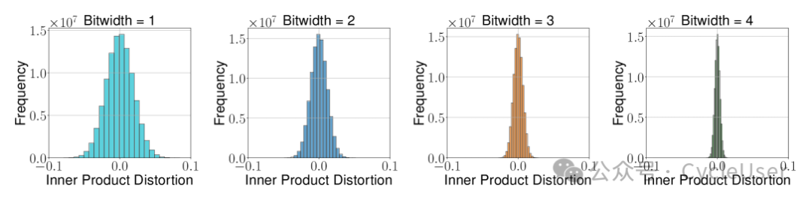
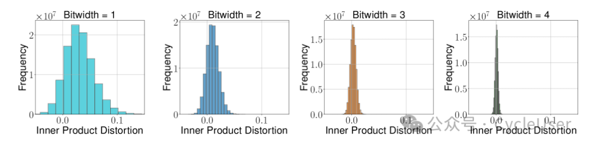
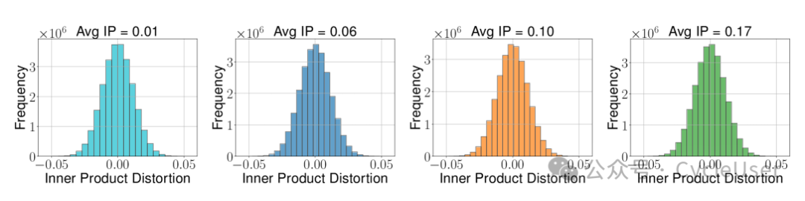
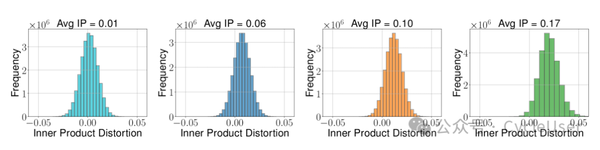
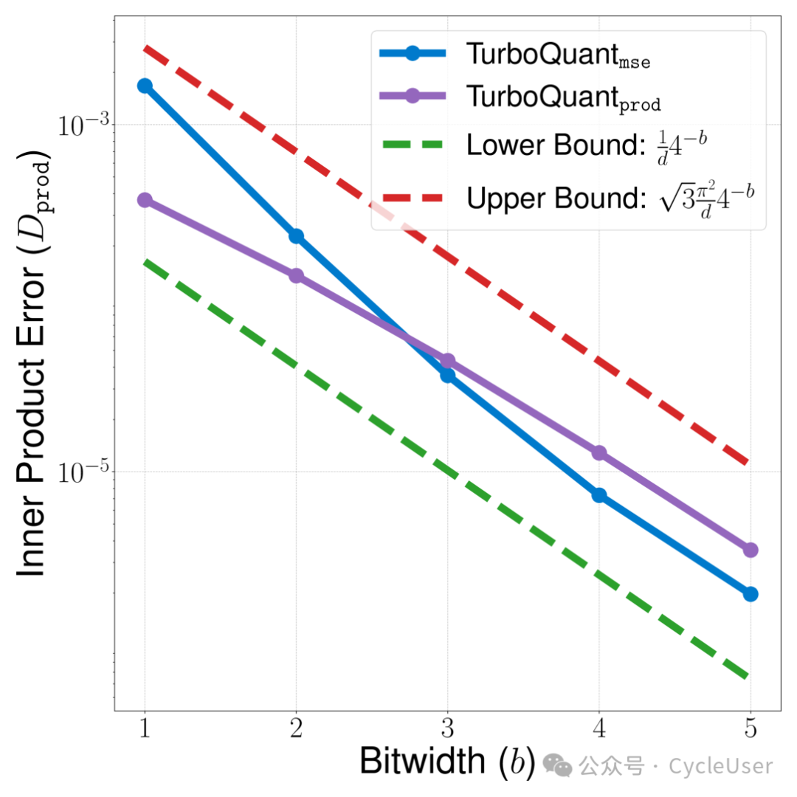
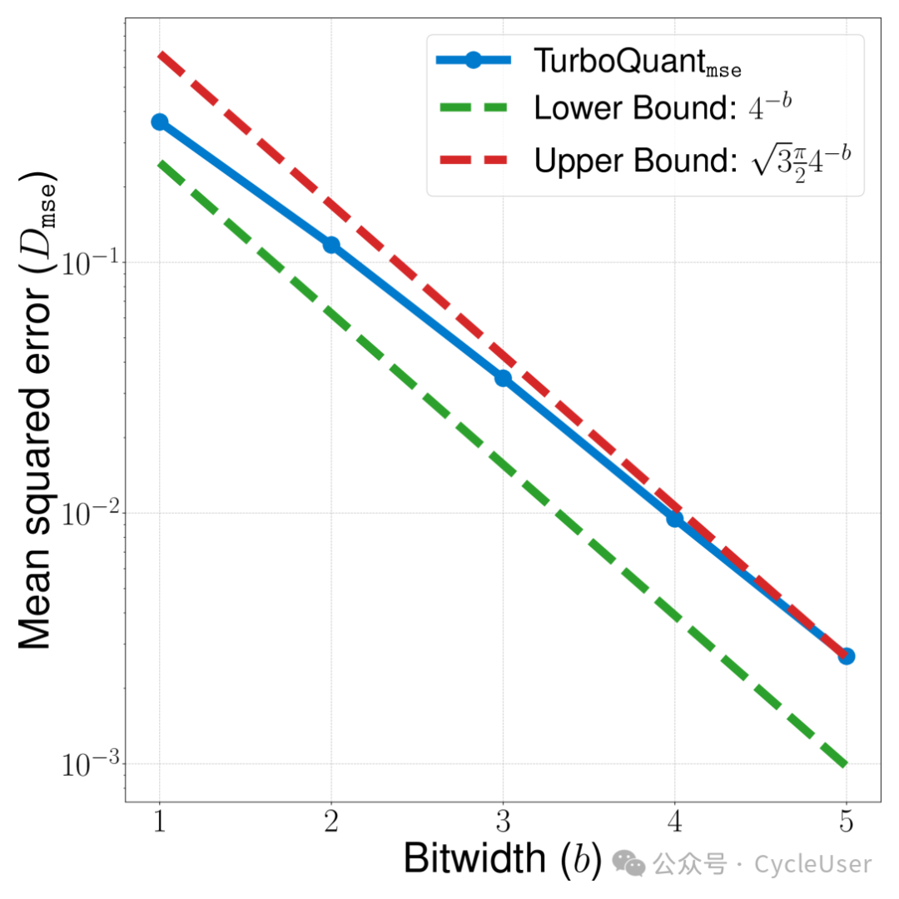
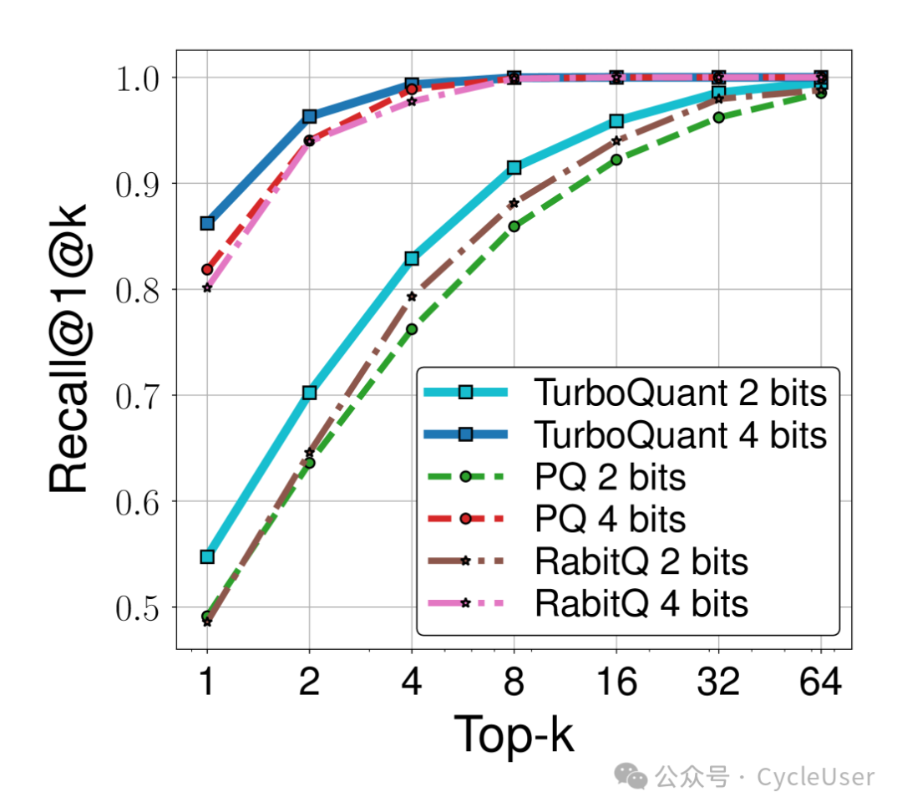
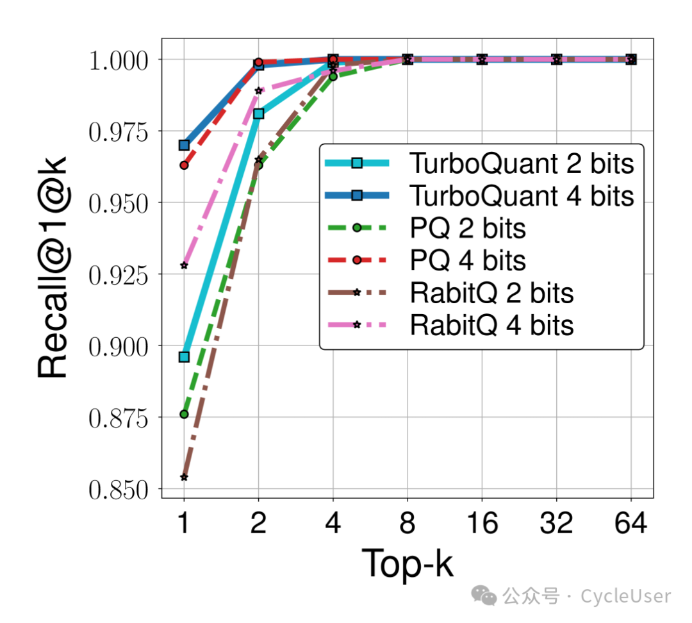
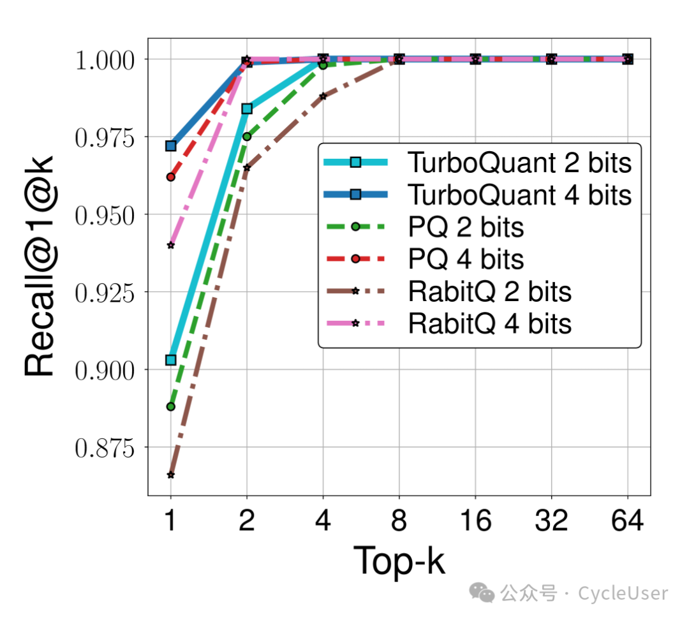

本文原文地址：arxiv.org/html/2504.19874v1
作者：
Amir Zandieh (Google Research),
Majid Daliri (New York University),
Majid Hadian (Google DeepMind),
Vahab Mirrokni (Google Research)
摘要
向量量化是香农信源编码理论中的核心问题，其目标是在最小化高维欧几里得向量几何结构扭曲的前提下对其进行处理。我们提出TurboQuant算法，同时解决均方误差(MSE)和内积扭曲问题，突破了现有方法无法达到最优扭曲率的局限。我们的数据无关算法适用于在线应用场景，在所有比特宽度和维度下均能达到近最优扭曲率（仅相差一个小常数因子）。TurboQuant的核心思想是：对输入向量进行随机旋转，使其坐标服从集中分布，并利用高维空间中不同坐标之间近乎独立的性质，对每个坐标独立应用最优标量量化器。值得注意的是，针对MSE优化的量化器在内积估计中会引入偏差。为此，我们提出两阶段方案：首先应用MSE量化器，然后对残差进行1比特量化JL(QJL)变换，从而得到无偏的内积量化器。我们还形式化证明了任何向量量化器在理论上可达到的最低扭曲率的下界，表明TurboQuant与该下界仅相差约2.7倍的常数因子。实验结果验证了我们的理论分析：在KV缓存量化任务中，我们使用每通道3.5比特达到了与全精度完全一致的质量，使用2.5比特也仅有轻微质量下降。此外，在最近邻搜索任务中，我们的方法在召回率上优于现有乘积量化技术，同时将索引时间降至几乎为零。
1. 引言
向量量化(VQ)在欧几里得空间中的应用对于高效处理高维向量至关重要，其应用领域涵盖从大规模人工智能模型的训练与部署，到为搜索/检索系统提供支持的向量数据库。核心目标是将高维向量压缩——即将浮点数坐标值转换为低比特宽度整数——同时最小化以均方误差(MSE)或内积误差度量的扭曲。通过保持这些几何属性，内积查询可以快速、低延迟地完成，同时降低计算和通信资源消耗。
这一问题可追溯至香农关于信源编码理论的开创性工作，该理论指出分块信源编码器（即向量量化器）所能达到的最低扭曲率由香农扭曲率函数决定，该函数由信源的统计特性和所选的扭曲度量（如MSE）决定。如今，VQ在人工智能、深度学习和搜索系统等核心计算领域发挥着关键作用。
1.1 VQ的应用场景
AI模型部署： VQ的关键应用之一是大语言模型(LLM)的部署。由于LLM的能力严重依赖于模型规模和上下文长度，其服务需要巨大的内存需求和更高的推理延迟。这种延迟主要源于加速器上HBM与SRAM之间或分布式集群间的通信瓶颈。通过压缩或量化模型权重和激活值，可以有效缓解这些瓶颈，从而显著降低推理成本。深度学习模型的核心是激活值与权重之间的内积运算。因此，模型量化方案致力于在精确保持这些内积的同时压缩权重和激活向量。
KV缓存压缩： 基于解码器的Transformer模型提出了另一个重要应用场景。这类模型需要在KV缓存中存储已生成token的键值嵌入，其规模随模型大小（层数和注意力头数）和上下文长度增长。这在内存使用和计算速度方面构成了显著瓶颈，特别是对于长上下文模型。因此，在不影响准确性的前提下减少KV缓存大小至关重要。在此情境下，保持这些嵌入向量的欧几里得结构——即它们的内积和距离——对于维持模型性能至关重要。VQ正是解决这一挑战的最合适框架，它提供了在保持关键几何特性的同时压缩高维嵌入的有效方法。
最近邻搜索： 此外，高维空间中使用内积或余弦相似度的最近邻(NN)搜索是向量数据库的基石。这些数据库是检索增强生成和信息检索的基础。VQ（即乘积量化PQ）在这些应用中扮演关键角色，它能够高效压缩数据库向量、优化内存使用，并促进与查询向量的低延迟、高精度内积估计，从而实现快速精准的最近邻搜索。
现有VQ算法存在权衡：要么缺乏加速器（向量化）兼容性且计算缓慢，不适合KV缓存量化等实时AI应用；要么相对于比特宽度的扭曲界不够理想。我们的目标是引入一种能解决这些局限的算法。具体而言，我们设计TurboQuant：一种轻量级、支持在线应用（对于KV缓存量化等场景至关重要）、且对加速器高度友好的算法——这是现代AI工作负载的关键属性。
TurboQuant的核心是两步过程。首先，我们开发一种在均方误差意义上具有最优扭曲率的向量量化器。随后，我们对残差应用1比特量化器，得到无偏且低扭曲的内积量化器。我们证明，针对MSE优化的量化器不会产生无偏的内积估计，而我们的两阶段方案有效弥合了这一差距。我们的MSE最优量化器首先对d维输入向量进行随机旋转。观察到旋转后向量的每个坐标服从Beta分布这一关键事实，我们通过求解连续k-means问题为每个坐标设计最优Lloyd-Max量化器。该方法给出最优MSE扭曲界并最小化残差的L2范数。为了获得无偏低扭曲的内积量化器，我们将量化器与近期提出的量化Johnson-Lindenstrauss(QJL)变换相结合，后者将残差向量的每个坐标量化为单比特。我们的算法为MSE和内积都提供了可证明的最优扭曲界，在比特宽度依赖性方面比现有方法实现了指数级改进。
2. 问题定义
我们的目标是设计一个量化映射，记为 ，将d维向量转换为B比特的二进制串。如果设 （其中 ），则该量化器的比特宽度为b，表示用于编码 每个实坐标的平均比特数。关键的是，我们需要一个逆映射 来执行反量化，从量化表示中近似重建原始向量。当然，这种转换本质上是有损的，因为Q不是双射。因此，我们的主要目标是最小化扭曲，特别关注均方误差(MSE)和内积扭曲。
我们对输入向量数据集不做任何假设，考虑最坏情况。我们让量化器Q(·)是随机的，导致随机输出。考虑到随机量化器，更合适的是定义量化器输出的随机性上的期望扭曲。因此，我们的目标是设计量化器，对于任何期望的比特宽度b，最小化以下对任何（最坏情况）向量 的期望扭曲度量：
MSE：
内积误差：
上述期望是对量化器Q(·)的随机性取的。此外，对于内积量化器，我们需要内积估计的无偏性，这对于众多应用来说是期望的性质。更准确地说，我们要求：
我们旨在设计计算高效的最优扭曲量化器 和 。具体而言，假设给定n个实值向量 ，我们设计以下基本操作：
- Quant：高效量化数据集并计算
- DeQuant：给定量化数据集，能高效重建原始向量，对任意 计算
3. 相关工作
VQ的起源： 向量量化理论始于香农关于可达扭曲率函数的开创性工作。1963年，Zador使用高分辨率方法推导了固定速率量化在高码率下的极限操作扭曲率函数，与香农的扭曲率函数高度吻合。然而，Zador并未具体考虑可实现的算法。Gersho的开创性论文进一步推动了向量量化发展，推广了高分辨率理论、简化了Zador的结果、引入了格向量量化，并提出了塑造该领域的关键猜想。尽管有这些理论进展，向量量化的实际适用性在早期仍不明朗。最直接的编码方法——暴力最近邻搜索——计算成本高昂，阻碍了VQ的实际采用。
在线与离线量化： 在线（数据无关）量化方法无需数据特定的调优或校准即可即时应用。相比之下，离线（数据相关）方法需要大量预处理和学习来使量化映射适应数据，使其不适合动态数据场景。例如，GPTQ、AWQ、SmoothQuant、QUIP等方法使用二阶（Hessian）信息来调优量化映射，这需要大量预处理甚至后处理。
在线KV缓存压缩： 已提出多种压缩KV缓存的方法，包括：架构修改（重新构建Transformer以最小化存储的键值对数量）、剪枝或驱逐冗余或不太重要的token。减少KV缓存大小的一种简单而有效的方法是量化KV缓存。针对此目的开发了多种量化技术。最近，一种名为QJL的新量化方法引入了一种基于草图技术的高效、数据无关的1比特量化方法，为内积查询提供无偏估计。
乘积量化(PQ)： 在使用欧几里得数据集的最近邻(NN)搜索问题中，索引大小造成了显著的内存瓶颈，通常通过量化技术来缓解，在NN文献中常称为乘积量化(PQ)。许多这些算法依赖于在索引阶段使用k-means变体构建量化码本。因此，这些方法由于需要大量预处理而不适合在线设置。
4. 技术方法与贡献概述
4.1 MSE优化的TurboQuant
我们的第一个VQ算法旨在最小化MSE扭曲。为此，我们对输入向量应用随机旋转，从而在每个坐标上诱导Beta分布，与输入向量无关。在高维d中，由于测度集中和中心极限定理，每个坐标的分布收敛到高斯分布 。此外，任意两个不同坐标变得几乎不相关，更重要的是，几乎独立（这是一个超越相关性更深入的结果）。这种近乎独立性是我们的量化设计得以简化的关键因素。它允许我们使用最优标量量化独立量化每个坐标，忽略不同坐标之间的相互作用或相关性，同时仍能达到近最优扭曲。
我们通过使用Max-Lloyd算法求解连续1维k-means问题，为具有Beta分布的随机变量找到最优标量量化器。我们预先计算并存储这些最优码本，以供后续TurboQuant算法高效调用。
定理1（MSE性能保证）： 对于任意比特宽度 和任意向量 ，量化过程输出的索引向量在解量化后产生的重建向量 满足以下扭曲界：
- MSE定义为 被界定为 （对任意 ）
- 对于小比特宽度，具体为 ，MSE呈现更细粒度的扭曲值：
4.2 内积优化的TurboQuant
我们证明MSE优化的量化器在内积估计中是有偏的，因此需要不同的VQ方案来获得无偏内积量化器。我们的解决方案是结合TurboQuant_MSE与QJL的两阶段算法。具体而言，设 为比特宽度 的TurboQuant_MSE的量化映射。对于任意 ，残差向量定义为 ，其L2范数很小（期望为 ）。然后我们可以在该残差向量上应用QJL量化映射，得到总比特宽度为b的无偏内积估计器。
定理2（内积性能保证）： 对于任意比特宽度 和任意向量 ，量化过程输出的索引向量、符号向量和标量值在解量化后产生的重建向量对于任意向量 满足以下性质：
- 期望内积：
- 内积扭曲定义为 被界定为 （对任意 ）
- 对于小比特宽度，具体为 ， 呈现更细粒度的扭曲值：
4.3 下界
定理3（最优压缩扭曲的下界）： 对于任意随机量化算法 （比特宽度为b）和任意重构映射 ，存在难以处理的输入实例 使得：
此外，存在 使得：
如我们的下界所示，TurboQuant的MSE扭曲与信息论下界相比仅相差最多约 倍。值得注意的是，对于较小的比特宽度，这一因子显著减小。例如，在 时，TurboQuant达到的扭曲仅与最优值相差约1.45倍，这也被我们的实验结果证实。
5. 预备知识
我们使用粗体小写字母（如 和 ）表示向量，使用粗体大写字母（如 ）表示矩阵。记号 表示向量 在坐标索引 i 和 j（含端点）之间的切片。对于矩阵 ，我们写 表示其第 i 行向量，简称为 。
我们用 表示 中半径为1的超球面。对于随机变量 x，我们将其微分熵记为 。对于随机变量 x 和 y，它们之间的互信息记为 。
5.1 超球面上随机点的坐标分布
引理1（超球面上随机点的坐标分布）： 对于任意正整数d，如果 是单位超球面上均匀分布的随机变量，则对于任意 ，坐标 服从以下（缩放/平移后的）Beta分布：
在高维中，这个Beta分布收敛到正态分布 。
5.2 香农扭曲下界
香农下界(SLB)是源自香农有损信源编码定理的强大工具，它为任何有损压缩方案提供了可达扭曲率的通用下界。
引理2（SLB）： 设 为具有任意概率分布 和有限微分熵 的随机向量。对于总比特复杂度 ，定义MSE扭曲率函数 为：
则对于任意比特复杂度 ，以下香农下界成立：
引理3（超球面上随机点的SLB）： 设 是单位超球面上均匀分布的随机变量，对于总比特复杂度 B 定义MSE扭曲率函数 。则对于任意比特复杂度 ，以下扭曲下界成立：
5.3 QJL：1比特内积量化
定义（QJL）： 对于任意正整数d，QJL映射 定义为：
对任意
其中 是随机矩阵，其条目独立同分布服从正态分布 ，sign函数逐元素应用于其向量输入。
反/解量化映射 定义为：
对任意
引理4（QJL性能保证）： 设 和 如上定义。对于任意向量 和任意 ，我们有：
- 无偏性：
- 方差界：
6. TurboQuant：高性能量化算法
我们开发了两种VQ算法，每种都针对特定目标设计。第一种算法旨在最小化量化后原始向量与重建向量之间的MSE。第二种算法针对无偏内积估计进行优化，解决了MSE最优量化器固有的偏差问题。
6.1 MSE最优TurboQuant
设 是d维单位球面上的（最坏情况）向量。我们的目标是在最小化重构MSE的同时将其量化为每坐标b比特。
我们首先通过乘以随机旋转矩阵 来随机化该向量。我们可以通过对具有独立同分布正态输入的随机矩阵应用QR分解来生成 。
结果旋转向量 在单位超球面 上均匀分布。每个坐标服从Beta分布，在高维中收敛到正态分布。此外，在高维中， 的不同坐标变得几乎独立，使我们能够独立地对每个坐标应用最优标量量化器。
最优标量量化问题可以表述为连续1维k-means问题。具体而言，我们旨在将区间 划分为 个簇/桶。设 为按升序排列的质心，我们可以将标量量化表述为以下k-means优化问题：
该问题可以使用迭代数值方法求解以达到任意精度。我们为一系列实际相关的比特宽度b求解一次，并存储结果以供量化器将来使用。
算法1：TurboQuant_MSE（MSE优化）
| 步骤 | 操作 |
|---|---|
| 输入 | 维度d和比特宽度b |
| 全局参数 | 1. 生成随机旋转矩阵 2. 通过寻找最小化MSE的质心 来构建码本 |
| Quant_MSE(x) | 3. 计算 4. 对每个 ，计算 ${\tt idx}j \gets \arg\min |
| DeQuant_MSE(idx) | 6. 对每个 ，计算 7. 计算 8. 输出： |
6.2 内积最优TurboQuant
对于最近邻搜索等重要应用，拥有无偏内积估计器至关重要。然而，TurboQuant_MSE不提供与查询向量的无偏内积估计。为了说明这一点，考虑比特宽度 的情况。在这种情况下，最优码本为 。这意味着TurboQuant_MSE的量化映射为 ，解量化映射为 。因此，对于足够大的d，我们有 ，其有偏乘数为 。
为了解决这一偏差，我们提出将TurboQuant_MSE与QJL实例相结合的解决方案。具体而言，设 为比特宽度 的量化映射。对于任意 ，残差向量 的L2范数很小。然后我们可以在此残差向量上应用QJL量化映射，得到总体比特宽度为b的无偏内积估计器。
算法2：TurboQuant_PROD（内积优化）
| 步骤 | 操作 |
|---|---|
| 输入 | 维度d和比特宽度b |
| 全局参数 | 1. 实例化比特宽度为 的TurboQuant_MSE 2. 生成随机投影矩阵 ，条目 |
| Quant_PROD(x) | 3. 计算 4. 计算 （残差向量） 5. 计算 6. 输出： |
| DeQuant_PROD(idx, qjl, γ) | 7. 计算 8. 计算 9. 输出： |
6.3 下界证明
我们通过 Yao 的极小极大原理证明 TurboQuant 达到了最优扭曲率。该原理允许我们将随机化算法对最坏情况确定性输入的下界与确定性算法对随机化输入的下界联系起来。随后，我们使用香农下界(SLB)推导出后者可达扭曲率的下界。
7. 实验
所有实验均使用单个 NVIDIA A100 GPU 执行。实验部分分为两部分：一部分验证理论结果，另一部分评估我们方法在下游任务（特别是KV缓存量化和最近邻向量搜索）上的性能。
7.1 理论验证
我们使用 DBpedia Entities 数据集（已编码为1536维空间）验证理论结果。我们随机采样100,000个数据点作为训练集，另有1,000个条目作为查询集。
我们评估两种量化方法：TurboQuant_PROD（内积无偏）和 TurboQuant_MSE（MSE优化）。
图1：TurboQuant_PROD和TurboQuant_MSE在内积估计中的误差分布

图1a: TurboQuant_prod

图1b: TurboQuant_mse
(a) 上图：TurboQuant_PROD 的内积误差分布 (b) 下图：TurboQuant_MSE 的内积误差分布
图2：当量化为2比特时，TurboQuant_PROD和TurboQuant_MSE的内积误差方差比较

图2a: TurboQuant_prod

图2b: TurboQuant_mse
(a) 上图：TurboQuant_PROD 的内积误差方差保持恒定 (b) 下图：TurboQuant_MSE 的内积误差方差随平均内积增加而增加
实验发现：
- 内积估计中，增加比特宽度会降低两种方法的方差
- TurboQuant_PROD 在所有比特宽度下保持内积估计的无偏性
- TurboQuant_MSE 在内积估计中引入偏差，该偏差随比特宽度增加而减小并最终趋近于零
图3：内积误差和MSE与理论界在不同比特宽度下的对比

图3a: 内积误差

图3b: MSE
(a) 左图：内积误差的理论上下界对比 (b) 右图：MSE的理论上下界对比
7.2 针haystack测试
"针haystack测试"是设计用于评估模型从长文档中检索特定信息能力的基准。测试将一个独特句子（"针"）放置在更大文本（"草堆"）的任意位置，然后评估模型是否能成功提取。
我们使用Llama-3.1-8B-Instruct模型进行评估，文档大小从4k到104k token不等。主要评估指标是召回率，即模型准确检索隐藏句子的程度。
我们对比了多种内存高效方法：PolarQuant、SnapKV、PyramidKV、KIVI，每种方法都设置在0.25的内存压缩比（即仅使用25%的完整KV缓存）。
图4：Llama-3.1-8B-Instruct在"Needle-in-a-Haystack"测试上的评估结果对比
| SnapKV | PyramidKV | KIVI | PolarQuant | Full-Precision | TurboQuant |
|---|---|---|---|---|---|
| SnapKV | PyramidKV | KIVI | PolarQuant | Full-Precision | TurboQuant |
| Score: 0.858 | Score: 0.895 | Score: 0.981 | Score: 0.995 | Score: 0.997 | Score: 0.997 |
尽管某些方法在召回上表现不佳，TurboQuant尽管经过超过4倍量化压缩，仍能达到与未压缩基线完全相同的性能。
结果： 具有理论保证的量化方法（如PolarQuant和TurboQuant）优于token级压缩技术（如SnapKV和PyramidKV）以及缺乏正式理论保证的标量量化方法（如KIVI）。值得注意的是，即使经过4倍以上的量化压缩，TurboQuant仍能达到与未压缩基线完全相同的性能。
7.3 LongBench端到端生成
我们在 LongBench 数据集上测试各种KV缓存压缩算法，该数据集涵盖广泛的长文本场景，包括单文档和多文档问答、摘要、小样本学习、合成任务和代码补全。为了确保在不同上下文长度上的均衡评估，我们采用LongBench-E子集，其长度分布更为均匀。
我们在Llama和Ministral模型上评估TurboQuant与其他基线方法的对比。我们使用2.5比特和3.5比特量化进行文本生成。这些非整数比特精度源于我们将通道分为异常值和非异常值集，并对每组应用两个独立的TurboQuant实例，为异常值分配更高的比特精度的策略。例如，在2.5比特设置中，32个异常值通道以3比特量化，其余96个通道以2比特量化，有效比特精度为 。
表1：LongBench-V1数据集上各KV缓存压缩方法在Llama上的性能对比
| 方法 | KV大小 | SingleQA | MultiQA | Summarization | Few shot | Synthetic | Code | Average |
|---|---|---|---|---|---|---|---|---|
| \multicolumn{9}{c}{Llama-3.1-8B-Instruct} | ||||||||
| Full Cache | 16 | 45.29 | 45.16 | 26.55 | 68.38 | 59.54 | 46.28 | 50.06 |
| KIVI | 3 | 43.38 | 37.99 | 27.16 | 68.38 | 59.50 | 44.68 | 48.50 |
| KIVI | 5 | 45.04 | 45.70 | 26.47 | 68.57 | 59.55 | 46.41 | 50.16 |
| PolarQuant | 3.9 | 45.18 | 44.48 | 26.23 | 68.25 | 60.07 | 45.24 | 49.78 |
| TurboQuant ( Ours) | 2.5 | 44.16 | 44.96 | 24.80 | 68.01 | 59.65 | 45.76 | 49.44 |
| TurboQuant ( Ours) | 3.5 | 45.01 | 45.31 | 26.00 | 68.63 | 59.95 | 46.17 | 50.06 |
| \multicolumn{9}{c}{Ministral-7B-Instruct} | ||||||||
| Full Cache | 16 | 47.53 | 49.06 | 26.09 | 66.83 | 53.50 | 47.90 | 49.89 |
| TurboQuant ( Ours) | 2.5 | 48.38 | 49.22 | 24.91 | 66.69 | 53.17 | 46.83 | 49.62 |
结果： 我们的方法在Llama和Ministral上都优于其他方法。尽管使用的比特少于竞争技术，TurboQuant仍保持与未量化模型相当的性能，同时将量化向量压缩至少4.5倍。
7.4 最近邻搜索实验
我们在 DBpedia Entities 数据集（1536维和3072维 OpenAI3 嵌入）以及较低维度的标准 GloVe 嵌入上进行实验。
我们随机采样100,000个数据点作为训练集，另有1,000个条目作为查询集。
我们将TurboQuant与两种基线量化方法进行比较：乘积量化(PQ) 和 RabitQ。我们量化训练集并基于 top-k 召回率（1@k）评估性能。
表2：不同方法在各维度下的量化时间（秒，使用4比特量化）
| 方法 | d=200 | d=1536 | d=3072 |
|---|---|---|---|
| 乘积量化 (PQ) | 37.04 | 239.75 | 494.42 |
| RabitQ | 597.25 | 2267.59 | 3957.19 |
| TurboQuant | 0.0007 | 0.0013 | 0.0021 |
方法说明：
- 乘积量化(PQ)： 依赖k-means算法构建码本，随着比特数增加，码本大小呈指数增长。我们使用了LUT256配置（含256个码字）的最高效实现。由于训练和评估使用同一数据集，PQ具有内在优势。
- RabitQ： 缺乏完全向量化的实现，无法利用GPU加速，在CPU上运行显著较慢。此外，该方法产生额外计算开销。
图5：不同数据集和嵌入维度下的召回率对比



(a) GloVe - d=200 (b) OpenAI3 - d=1536 (c) OpenAI3 - d=3072
结果： 尽管基线方法具有优势，TurboQuant 在所有实验的召回率方面始终优于乘积量化和 RabitQ。这展示了所提出方法的鲁棒性和效率，使其成为高维量化搜索任务的有力替代方案，同时将索引时间降至几乎为零。
8. 结论
我们提出了 TurboQuant，这是一种用于高维向量在线量化的数据无关算法，能够同时针对 MSE 和内积扭曲进行优化。TurboQuant 通过随机旋转诱导坐标分布，并利用高维空间中坐标近乎独立的性质，对每个坐标独立应用最优标量量化器。对于内积估计，我们采用两阶段方法，首先应用 MSE 量化器，然后对残差进行 1 比特 QJL 变换，以获得无偏估计。
我们的理论分析表明，TurboQuant 达到了近最优扭曲率，与信息论下界仅相差约 2.7 倍的常数因子。实验结果验证了这些理论发现，在 KV 缓存量化和最近邻搜索任务中均表现出色。
参考文献
信息论与信号处理 (Information Theory & Signal Processing)
- Shannon, C. E. (1948). A mathematical theory of communication. The Bell System Technical Journal, 27(3), 379-423. https://doi.org/10.1002/j.1538-7305.1948.tb01338.x) 中文： 通信的数学理论
- Shannon, C. E. (1959). Coding theorems for a discrete source with a fidelity criterion. IRE Nat. Conv. Rec, 4(142-163), 1. 中文： 具有保真度准则的离散信源编码定理
- Cover, T. M. (1999).Elements of Information Theory. John Wiley & Sons. 中文： 信息论基础
- Max, J. (1960). Quantizing for minimum distortion. IRE Transactions on Information Theory, 6(1), 7-12. https://doi.org/10.1109/TIT.1960.1057548) 中文： 最小失真量化
- Panter, P. F., & Dite, W. (1951). Quantization distortion in pulse-count modulation with nonuniform spacing of levels. Proceedings of the IRE, 39(1), 44-48. 中文： 非均匀间距脉冲计数调制的量化失真
向量量化理论 (Vector Quantization Theory)
- Zador, P. L. (1964).Development and evaluation of procedures for quantizing multivariate distributions. Stanford University. 中文： 多元分布量化程序的开发与评估
- Gersho, A. (1979). Asymptotically optimal block quantization. IEEE Transactions on Information Theory, 25(4), 373-380. https://doi.org/10.1109/TIT.1979.1056063) 中文： 渐近最优分块量化
- Gersho, A. (1982). On the structure of vector quantizers. IEEE Transactions on Information Theory, 28(2), 157-166. https://doi.org/10.1109/TIT.1982.1056488) 中文： 向量量化器的结构
- Lloyd, S. (1982). Least squares quantization in PCM. IEEE Transactions on Information Theory, 28(2), 129-137. https://doi.org/10.1109/TIT.1982.1056481) 中文： PCM中的最小二乘量化
高维概率与几何 (High-Dimensional Probability & Geometry)
- Johnson, W. B., Lindenstrauss, J., & Schechtman, G. (1986). Extensions of Lipschitz maps into Banach spaces. Israel Journal of Mathematics, 54(2), 129-138. https://doi.org/10.1007/BF02764908
Lipschitz映射到Banach空间的延拓
- Dasgupta, S., & Gupta, A. (2003). An elementary proof of a theorem of Johnson and Lindenstrauss. Random Structures & Algorithms, 22(1), 60-65. https://doi.org/10.1002/rsa.10073
Johnson-Lindenstrauss定理的一个初等证明
- Vershynin, R. (2018).High-dimensional probability: An introduction with applications in data science. Cambridge University Press. https://doi.org/10.1017/9781108231594
高维概率：数据科学应用导论
- Boucheron, S., Lugosi, G., & Bousquet, O. (2003). Concentration inequalities. Summer school on machine learning, 208-240. https://doi.org/10.1007/978-3-540-35488-8_7
浓度不等式
深度学习与Transformer (Deep Learning & Transformers)
- Vaswani, A., et al. (2017). Attention is all you need. NeurIPS. https://arxiv.org/abs/1706.03762
注意力就是你所需要的一切
- Kaplan, J., et al. (2020). Scaling laws for neural language models. arXiv preprint arXiv:2001.08361. https://arxiv.org/abs/2001.08361
神经语言模型的缩放定律
- Paszke, A., et al. (2019). PyTorch: An imperative style, high-performance deep learning library. NeurIPS. https://arxiv.org/abs/1912.01703
PyTorch：一个命令式风格的高性能深度学习库
- Dao, T. (2023). FlashAttention-2: Faster attention with better parallelism and work partitioning. arXiv preprint arXiv:2307.08691. https://arxiv.org/abs/2307.08691
FlashAttention-2：具有更好并行性和工作分区的高速注意力
- Shah, J., et al. (2024). FlashAttention-3: Fast and accurate attention with asynchrony and low-precision. arXiv preprint arXiv:2407.08608. https://arxiv.org/abs/2407.08608
FlashAttention-3：具有异步和低精度的快速准确注意力
- Pope, R., et al. (2023). Efficiently scaling transformer inference. Proceedings of Machine Learning and Systems, 5. 中文： 高效扩展Transformer推理
大语言模型 (Large Language Models)
- Achiam, J., et al. (2023). GPT-4 technical report. arXiv preprint arXiv:2303.08774. https://arxiv.org/abs/2303.08774
GPT-4技术报告
- Dubey, A., et al. (2024). The LLaMA 3 herd of models. arXiv preprint arXiv:2407.21783. https://arxiv.org/abs/2407.21783
LLaMA 3系列模型
- Touvron, H., et al. (2023). LLaMA 2: Open foundation and fine-tuned chat models. arXiv preprint arXiv:2307.09288. https://arxiv.org/abs/2307.09288
LLaMA 2：开源基础模型与微调聊天模型
- Reid, M., et al. (2024). Gemini 1.5: Unlocking multimodal understanding across millions of tokens of context. arXiv preprint arXiv:2403.05530. https://arxiv.org/abs/2403.05530
Gemini 1.5：跨数百万上下文token的多模态理解
- Team, G., et al. (2024). Gemini 1.5: Unlocking multimodal understanding across millions of tokens of context. arXiv preprint arXiv:2403.05530. 中文： Gemini 1.5：跨数百万上下文token的多模态理解
- Dai, D., et al. (2024). DeepSeekMoE: Towards ultimate expert specialization in mixture-of-experts language models. arXiv preprint arXiv:2401.06066. https://arxiv.org/abs/2401.06066
DeepSeekMoE：迈向混合专家语言模型的终极专家专门化
KV缓存量化 (KV Cache Quantization)
- Zandieh, A., Daliri, M., & Han, I. (2024). QJL: 1-Bit Quantized JL Transform for KV Cache Quantization with Zero Overhead. arXiv preprint arXiv:2406.03482. https://arxiv.org/abs/2406.03482
QJL：用于零开销KV缓存量化的1比特量化JL变换
- Liu, Z., et al. (2024). KIVI: A Tuning-Free Asymmetric 2bit Quantization for KV Cache. arXiv preprint arXiv:2402.02750. https://arxiv.org/abs/2402.02750
KIVI：用于KV缓存的无调优非对称2比特量化
- Hooper, C., et al. (2024). KVQuant: Towards 10 Million Context Length LLM Inference with KV Cache Quantization. arXiv preprint arXiv:2401.18079. https://arxiv.org/abs/2401.18079
KVQuant：基于KV缓存量化的千万上下文长度LLM推理
- Yue, Y., et al. (2024). WKVQuant: Quantizing weight and key/value cache for large language models gains more. arXiv preprint arXiv:2402.12065. https://arxiv.org/abs/2402.12065
WKVQuant：量化大语言模型的权重和键/值缓存获得更多收益
- Yang, J. Y., et al. (2024). No Token Left Behind: Reliable KV Cache Compression via Importance-Aware Mixed Precision Quantization. arXiv preprint arXiv:2402.18096. https://arxiv.org/abs/2402.18096
不丢弃任何token：通过重要性感知混合精度量化实现可靠的KV缓存压缩
- Dong, S., et al. (2024). QAQ: Quality Adaptive Quantization for LLM KV Cache. arXiv preprint arXiv:2403.04643. https://arxiv.org/abs/2403.04643
QAQ：用于LLM KV缓存的质量自适应量化
- Kang, H., et al. (2024). GEAR: An efficient KV cache compression recipe for near-lossless generative inference of LLM. arXiv preprint arXiv:2403.05527. https://arxiv.org/abs/2403.05527
GEAR：一种高效的KV缓存压缩配方，实现近乎无损的LLM生成推理
- Zhang, T., et al. (2024). KV Cache is 1 Bit Per Channel: Efficient Large Language Model Inference with Coupled Quantization. arXiv preprint arXiv:2405.03917. https://arxiv.org/abs/2405.03917
KV缓存每通道1比特：基于耦合量化的高效大语言模型推理
- Zhang, Z., et al. (2024). H2O: Heavy-hitter oracle for efficient generative inference of large language models. NeurIPS, 36. https://arxiv.org/abs/2309.17453
H2O：大语言模型高效生成推理的重击者预言机
- Liu, Z., et al. (2024). Scissorhands: Exploiting the persistence of importance hypothesis for LLM KV cache compression at test time. NeurIPS, 36. https://arxiv.org/abs/2310.17453
剪刀手：利用重要性持久性假设在测试时进行LLM KV缓存压缩
- Xiao, G., et al. (2023). Efficient streaming language models with attention sinks. arXiv preprint arXiv:2309.17453. https://arxiv.org/abs/2309.17453
具有注意力接收池的高效流式语言模型
- Li, Y., et al. (2024). SnapKV: LLM knows what you are looking for before generation. arXiv preprint arXiv:2404.14469. https://arxiv.org/abs/2404.14469
SnapKV：LLM在生成前就知道你在寻找什么
- Cai, Z., et al. (2024). PyramidKV: Dynamic KV cache compression based on pyramidal information funneling. arXiv preprint arXiv:2406.02069. https://arxiv.org/abs/2406.02069
PyramidKV：基于金字塔式信息漏斗的动态KV缓存压缩
- Sun, H., et al. (2024). ShadowKV: KV cache in shadows for high-throughput long-context LLM inference. arXiv preprint arXiv:2410.21465. https://arxiv.org/abs/2410.21465
ShadowKV：阴影中的KV缓存用于高吞吐量的长上下文LLM推理
- Kim, J., et al. (2024). LexICO: Extreme KV Cache Compression via Sparse Coding over Universal Dictionaries. arXiv preprint arXiv:2412.08890. https://arxiv.org/abs/2412.08890
LexICO：通过通用字典上的稀疏编码实现极端KV缓存压缩
- Fu, Y., et al. (2024). Not all heads matter: A head-level KV cache compression method with integrated retrieval and reasoning. arXiv preprint arXiv:2410.19258. https://arxiv.org/abs/2410.19258
不是所有头都重要：一种集成检索与推理的头级KV缓存压缩方法
- Han, I., et al. (2025). PolarQuant: Quantizing KV Caches with Polar Transformation. arXiv preprint arXiv:2502.02617. https://arxiv.org/abs/2502.02617
PolarQuant：基于极坐标变换的KV缓存量化
- Han, I., et al. (2025). BalanceKV: KV Cache Compression through Discrepancy Theory. arXiv preprint arXiv:2502.07861. https://arxiv.org/abs/2502.07861
BalanceKV：通过差异理论进行KV缓存压缩
- Su, Z., et al. (2025). RotateKV: Accurate and Robust 2-Bit KV Cache Quantization for LLMs via Outlier-Aware Adaptive Rotations. arXiv preprint arXiv:2501.16383. https://arxiv.org/abs/2501.16383
RotateKV：通过异常值感知自适应旋转实现LLM准确且鲁棒的2比特KV缓存量化
LLM推理优化 (LLM Inference Optimization)
- Shazeer, N. (2019). Fast transformer decoding: One write-head is all you need. arXiv preprint arXiv:1911.02150. https://arxiv.org/abs/1911.02150
快速Transformer解码：一个写头就够了
- Ainslie, J., et al. (2023). GQA: Training Generalized Multi-Query Transformer Models from Multi-Head Checkpoints. EMNLP. https://arxiv.org/abs/2305.13245
GQA：从多头检查点训练广义多查询Transformer模型
- Kwon, W., et al. (2023). Efficient memory management for large language model serving with PagedAttention. SOSP. https://arxiv.org/abs/2309.17453
使用PagedAttention高效管理大语言模型服务的内存
- Sheng, Y., et al. (2023). FlexGen: High-throughput generative inference of large language models with a single GPU. ICML. https://arxiv.org/abs/2303.06865
FlexGen：使用单个GPU实现大语言模型的高吞吐量生成推理
- Jiang, H., et al. (2024). MInference 1.0: Accelerating Pre-filling for Long-Context LLMs via Dynamic Sparse Attention. NeurIPS. https://arxiv.org/abs/2407.00912
MInference 1.0：通过动态稀疏注意力加速长上下文LLM的预填充
- Zandieh, A., et al. (2024). SubGen: Token Generation in Sublinear Time and Memory. arXiv preprint arXiv:2402.06082. https://arxiv.org/abs/2402.06082
SubGen：亚线性时间和内存的token生成
- Fu, Y., et al. (2024). Data engineering for scaling language models to 128k context. arXiv preprint arXiv:2402.10171. https://arxiv.org/abs/2402.10171
将语言模型扩展到128k上下文的数据工程
LLM训练与后训练 (LLM Training & Post-Training)
- Dettmers, T., et al. (2022). GPT3.int8(): 8-bit matrix multiplication for transformers at scale. NeurIPS, 35. https://arxiv.org/abs/2208.07339
GPT3.int8()：大规模Transformer的8比特矩阵乘法
- Dettmers, T., et al. (2023). SPQR: A sparse-quantized representation for near-lossless LLM weight compression. arXiv preprint arXiv:2306.03078. https://arxiv.org/abs/2306.03078
SPQR：近乎无损LLM权重压缩的稀疏量化表示
- Dettmers, T., et al. (2024). QLoRA: Efficient finetuning of quantized LLMs. NeurIPS, 36. https://arxiv.org/abs/2305.14314
QLoRA：量化LLM的高效微调
- Frantar, E., et al. (2022). GPTQ: Accurate post-training quantization for generative pre-trained transformers. arXiv preprint arXiv:2210.17323. https://arxiv.org/abs/2210.17323
GPTQ：生成式预训练Transformer的精确训练后量化
- Lin, J., et al. (2023). AWQ: Activation-aware weight quantization for LLM compression and acceleration. arXiv preprint arXiv:2306.00978. https://arxiv.org/abs/2306.00978
AWQ：用于LLM压缩和加速的激活感知权重量化
- Lin, J., et al. (2024). AWQ: Activation-aware weight quantization for on-device LLM compression and acceleration. MLSys. https://arxiv.org/abs/2306.00978
AWQ：用于设备端LLM压缩和加速的激活感知权重量化
- Xiao, G., et al. (2023). SmoothQuant: Accurate and efficient post-training quantization for large language models. ICML. https://arxiv.org/abs/2212.05420
SmoothQuant：用于大语言模型的精确高效训练后量化
- Kim, S., et al. (2023). SqueezeLLM: Dense-and-sparse quantization. arXiv preprint arXiv:2306.07629. https://arxiv.org/abs/2306.07629
SqueezeLLM：密集与稀疏量化
- Chee, J., et al. (2023). QuIP: 2-bit quantization of large language models with guarantees. NeurIPS, 36. https://arxiv.org/abs/2306.07629
QuIP：具有保证的大语言模型2比特量化
- Ashkboos, S., et al. (2024). Quarot: Outlier-free 4-bit inference in rotated LLMs. arXiv preprint arXiv:2404.00456. https://arxiv.org/abs/2404.00456
Quarot：旋转LLM中无异常值的4比特推理
乘积量化与最近邻搜索 (Product Quantization & Nearest Neighbor Search)
- Jegou, H., Douze, M., & Schmid, C. (2010). Product quantization for nearest neighbor search. IEEE TPAMI, 33(1), 117-128. https://doi.org/10.1109/TPAMI.2010.57
用于最近邻搜索的乘积量化
- Babenko, A., & Lempitsky, V. (2014). Additive quantization for extreme vector compression. CVPR. https://doi.org/10.1109/CVPR.2014.129
用于极向量压缩的加性量化
- Ge, T., He, K., Ke, Q., & Sun, J. (2013). Optimized product quantization for approximate nearest neighbor search. CVPR. https://doi.org/10.1109/CVPR.2013.109
用于近似最近邻搜索的优化乘积量化
- Wang, J., et al. (2017). A survey on learning to hash. IEEE TPAMI, 40(4), 769-790. https://doi.org/10.1109/TPAMI.2017.2697960
学习哈希综述
- Guo, R., et al. (2020). Accelerating large-scale inference with anisotropic vector quantization. ICML. https://arxiv.org/abs/1911.01438
使用各向异性向量量化加速大规模推理
- Gao, J., Long, C., et al. (2024). RaBitQ: Quantizing High-Dimensional Vectors with a Theoretical Error Bound for Approximate Nearest Neighbor Search. ACM SIGMOD. https://doi.org/10.1145/3588693
RaBitQ：具有近似最近邻搜索理论误差界的高维向量量化
- Gao, J., et al. (2024). Practical and Asymptotically Optimal Quantization of High-Dimensional Vectors in Euclidean Space for Approximate Nearest Neighbor Search. arXiv preprint arXiv:2409.09913. https://arxiv.org/abs/2409.09913
用于近似最近邻搜索的欧几里得空间中高维向量的实用且渐近最优量化
草图与内积估计 (Sketching & Inner Product Estimation)
- Charikar, M. S. (2002). Similarity estimation techniques from rounding algorithms. STOC. https://doi.org/10.1145/509907.509965
来自舍入算法的相似性估计技术
- Yu, F. X. X., et al. (2016). Orthogonal random features. NeurIPS, 29. https://arxiv.org/abs/1610.01725
正交随机特征
- Ji, J., et al. (2012). Super-bit locality-sensitive hashing. NeurIPS, 25. 中文： 超比特局部敏感哈希
- Bessa, A., et al. (2023). Weighted Minwise Hashing Beats Linear Sketching for Inner Product Estimation. PODS. https://doi.org/10.1145/3584372.3588679
加权最小哈希在内积估计中优于线性草图
- Daliri, M., et al. (2024). Sampling Methods for Inner Product Sketching. Proc. VLDB Endow. https://arxiv.org/abs/2309.16157
内积草图的采样方法
- Matsumoto, N., & Mazumdar, A. (2024). Binary Iterative Hard Thresholding Converges with Optimal Number of Measurements for 1-Bit Compressed Sensing. J. ACM, 71(5). https://doi.org/10.1145/3680542
二元迭代硬阈值以最优测量数收敛于1比特压缩感知
- Plan, Y., Vershynin, R., & Yudovina, E. (2017). High-dimensional estimation with geometric constraints. Information and Inference, 6(1), 1-40. https://doi.org/10.1093/imaiai/iaw007
几何约束下的高维估计
Transformer加速 (Transformer Acceleration)
- Zandieh, A., Han, I., Daliri, M., & Karbasi, A. (2023). KDEformer: Accelerating Transformers via Kernel Density Estimation. ICML. https://proceedings.mlr.press/v202/zandieh23a.html
KDEformer：通过核密度估计加速Transformer
- Han, I., et al. (2023). Hyperattention: Long-context attention in near-linear time. arXiv preprint arXiv:2310.05869. https://arxiv.org/abs/2310.05869
超注意力：近线性时间的长上下文注意力
向量数据库与检索 (Vector Databases & Retrieval)
- Gao, Y., et al. (2023). Retrieval-augmented generation for large language models: A survey. arXiv preprint arXiv:2312.10997. https://arxiv.org/abs/2312.10997
大语言模型的检索增强生成综述
- Edge, D., et al. (2024). From local to global: A graph RAG approach to query-focused summarization. arXiv preprint arXiv:2404.16130. https://arxiv.org/abs/2404.16130
从局部到全局：一种用于查询聚焦摘要的图RAG方法
- Khattab, O., & Zaharia, M. (2020). ColBERT: Efficient and effective passage search via contextualized late interaction over BERT. SIGIR. https://doi.org/10.1145/3397271.3401075
ColBERT：通过BERT上上下文晚期交互实现高效有效段落搜索
- Santhanam, K., et al. (2021). ColBERTv2: Effective and efficient retrieval via lightweight late interaction. arXiv preprint arXiv:2112.01488. https://arxiv.org/abs/2112.01488
ColBERTv2：通过轻量级晚期交互实现有效高效检索
- Thakur, N., et al. (2021). BEIR: A Heterogeneous Benchmark for Zero-shot Evaluation of Information Retrieval Models. NeurIPS. https://openreview.net/forum?id=wCu6T5xFjeJ
BEIR：信息检索模型零样本评估的异构基准
基准与数据集 (Benchmarks & Datasets)
- Bai, Y., et al. (2023). LongBench: A Bilingual, Multitask Benchmark for Long Context Understanding. arXiv preprint arXiv:2308.14508. https://arxiv.org/abs/2308.14508
LongBench：用于长上下文理解的双语多任务基准
- Pennington, J., Socher, R., & Manning, C. (2014). GloVe: Global Vectors for Word Representation. EMNLP. https://aclanthology.org/D14-1162/
GloVe：词表示的全局向量
- Gao, L., et al. (2023). A framework for few-shot language model evaluation. Zenodo. https://github.com/EleutherAI/lm-evaluation-harness
少样本语言模型评估框架
- Kamradt, G. (2023). Needle in a haystack - pressure testing LLMs. GitHub. https://github.com/gkamradt/LLMTest_NeedleInAHaystack
大海捞针——压力测试LLM
生成式AI应用 (Generative AI Applications)
- Ramesh, A., et al. (2022). Hierarchical text-conditional image generation with CLIP latents. arXiv preprint arXiv:2204.06125. https://arxiv.org/abs/2204.06125
具有CLIP潜变量的分层文本条件图像生成
- Ruiz, N., et al. (2023). DreamBooth: Fine tuning text-to-image diffusion models for subject-driven generation. CVPR. https://doi.org/10.1109/CVPR52788.2023.00955
DreamBooth：用于主体驱动生成的微调文本到图像扩散模型
- OpenAI. (2024). Sora: Creating video from text. https://openai.com/index/sora/
Sora：从文本创建视频
- OpenAI. (2024). Introducing GPT-4o. https://openai.com/index/hello-gpt-4o/
介绍GPT-4o
其他相关工作 (Other Related Work)
- LongChat. (2023). How Long Can Open-Source LLMs Truly Promise on Context Length? https://lmsys.org/blog/2023-06-29-longchat
开源LLM在上下文长度上能真正承诺多少？
- Li, D., et al. (2023). LongChat. https://huggingface.co/lmsys/longchat-7b-v1.5-32k
LongChat
- Bhattacharya, A., Freund, Y., & Jaiswal, R. (2022). On the k-means/median cost function. Information Processing Letters, 177, 106252. https://doi.org/10.1016/j.ipl.2022.106252
关于k-means/中位数成本函数
技术产品 (Technologies)
- Anthropic. (2024). Claude. https://www.anthropic.com/news/claude-3-family
Claude
- Google. (2024). Gemini 1.5 Pro. https://arxiv.org/abs/2403.05530
Gemini 1.5 Pro
- Google DeepMind. (2024). Veo 2. https://deepmind.google/technologies/veo/veo-2/
Veo 2
- Adobe. (2023). Adobe FireFly. https://firefly.adobe.com/
Adobe FireFly
- Midjourney. (2022). Midjourney. https://www.midjourney.com/home
Midjourney
- Microsoft. (2023). Microsoft Copilot. https://github.com/features/copilot
微软Copilot
- Meta. (2024). Llama 3. https://github.com/meta-llama/llama3
Llama 3
- Elastic. (2025). Elastic Search. https://www.elastic.co/enterprise-search/vector-search
Elastic搜索
- Pinecone. (2025). PineCone Vector Database. https://www.pinecone.io/
PineCone向量数据库
- Qdrant. (2025). Qdrant Vector Search. https://qdrant.tech/
Qdrant向量搜索
- pgvector. (2025). Pgvector Search. https://github.com/pgvector/pgvector/
Pgvector搜索
预览时标签不可点
Close
更多
Name cleared
微信扫一扫赞赏作者
Like the AuthorOther Amount
赞赏后展示我的头像
作品
暂无作品
Like the Author
Other Amount
¥
最低赞赏 ¥0
OK
Back
Other Amount
更多
赞赏金额
¥
最低赞赏 ¥0
1
2
3
4
5
6
7
8
9
0
.
大语言模型 · 目录
大语言模型
上一篇MoXing升级：同时运行多个模型实例下一篇Google 的 TurboQuant 算法如何让AI更省内存？搞定向量量化难题
Close
更多
搜索「」网络结果
Close
调整当前正文文字大小
更多
100%